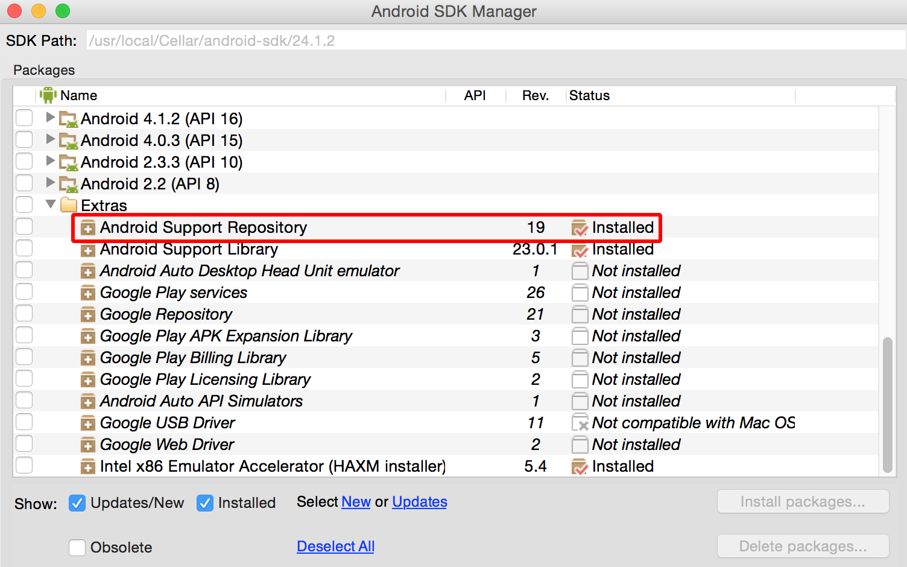
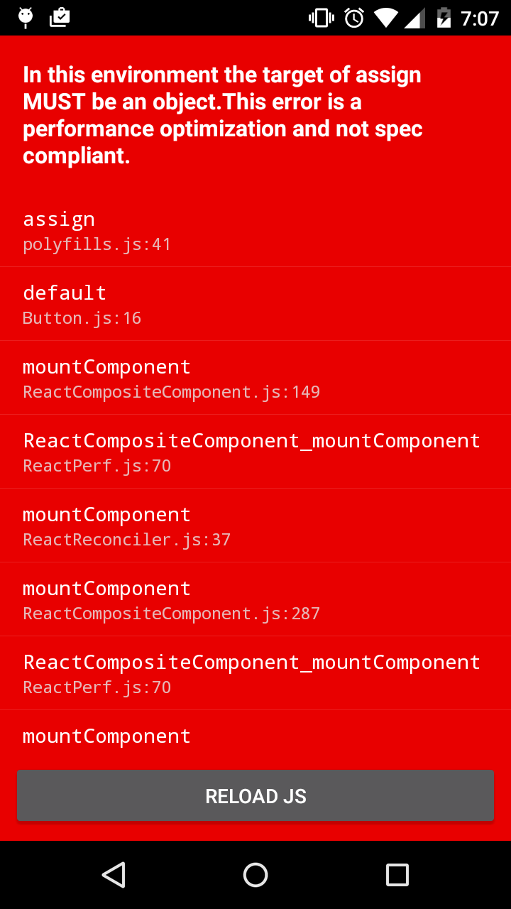

What
=======
- framework to build Native mobile apps using JS and React
- used by fb for Groups and Ads manager apps
- iOS: Jan 2015, Android: Sept 2015
Why Not __
=========
- Native SDKs
- learning curve: seperate paradigms
- maintaince: seperate codebases
- compiling takes a long time
Cordova/PhoneGap
wrapped webview feels toyish
slow performance
NativeScript
no react! imperative
Crosscompiled Xamarin (C#), Marmalade (C++)
can't use native SDK elements
doesn't look native on any platform
lots of control, very manual
Why React Native?
========
- "learn once, write everywhere"
- JS (ships with mix of es6 and es7 Babel transforms)
- https://facebook.github.io/react-native/docs/javascript-environment.html
- can use any editor (not boxed into XCode/Eclipse/Android Studio)
- turly native
React Basics
===========
- Declarative approach
- everything is a component (vs controllers, directives, services in Angular 1)
- component communication via props
- solves the problem of stateful ui by rerendering UI whenever the state or props changes
- calculates a diff
```javascript
render() {
return(
<View>
<Text>Hello World!</Text>
</View>
);
}
```
React Native Basics
==================
- JSX wraps native elemts:
- View, ListView
- Text
- TouchableOpacity, TouchableHighLight
- Navigator
- Subset of CSS properties to style
- Flexbox for layout
##How does Native work?

Under the Hood of React Native talk, https://www.youtube.com/watch?v=8N4f4h6SThc)
- JS running in JavaScriptCore JSVM controlling Native through a C++/Java bridge
- platform specific code are 'infixed' by platform name
- packager starts a local webserver and sends a JS bundle to device
```
<Text /> => new TextView(getContext());
```
- Can define your own & publish: https://react.parts/native

Note:
- gradle to assemble release apk
- Native asks to start the app, and starts JSVM
- JSVM runs developer's JS code, ie. give me some views
- goes back to Native, Native goes here are some views
- solves potential bottlenecks by running three threads, UI Event Queue, Native Modules Event Queue and JS Event Queue

dev Setup

##running for dev
```
$ react-native init # generates hello world proj
$ react-native start # starts local webserver
$ adb reverse tcp:8081 tcp:8081 # enables device GET of js bundle from local webserver
$ react-native run-android # starts the app on device
```
##packaging apk
```
$./gradlew assembleRelease
```
tools
===========
- android monitor
- android avd emulator (slow even with accelerator, test on device)
- live reloading or shake to reload
- chrome debugger
- element inspector
cons
=======
- Navigator awkward to use
- pass props in the route?
- switch statement in render?
- Reload always restarts at the first scene
- trick: set the intial scene to the one you're working on
- Still new
- few modules (no offical camera, accelerometer apis)
- unexpected, not to spec errors:
<View style={{borderWidth: 1, ...style}}>

<View style={[{paddingLeft:1}, ...style]}>
## extras
- app I wrote before this talk
- https://github.com/cy/kanaspeed
- boiler plate app w/ redux
- https://github.com/FormidableLabs/formidable-react-native-app-boilerplate
- react native playground
- https://rnplay.org/
- these slides
- https://github.com/cy/react-native-talk